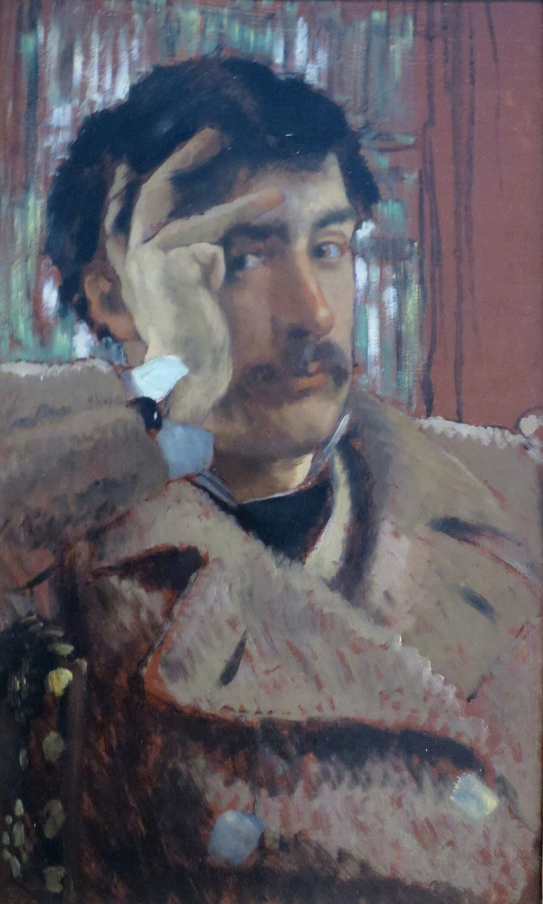
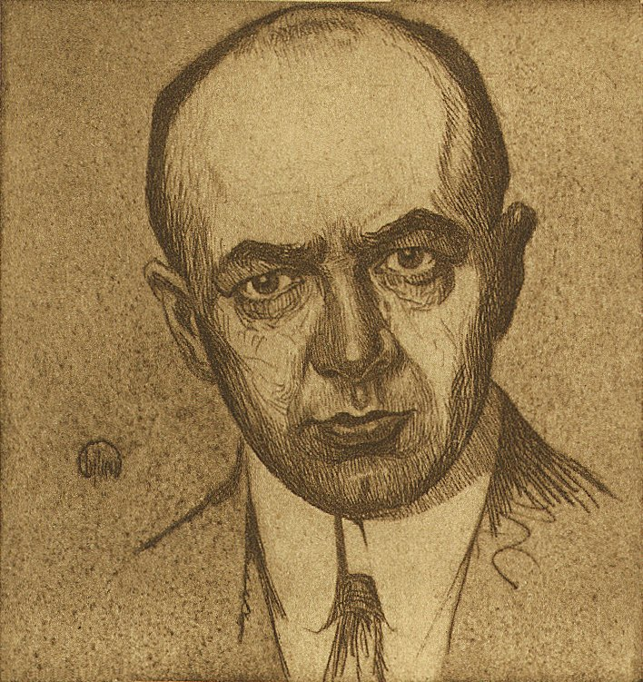
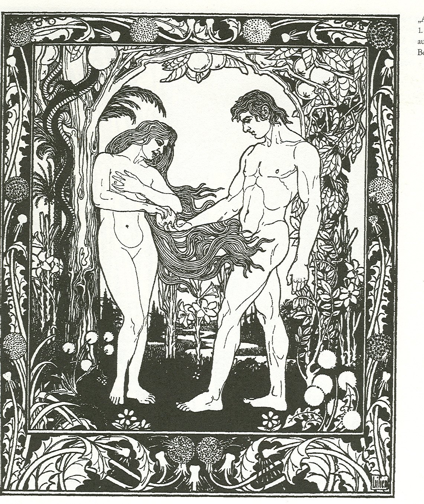
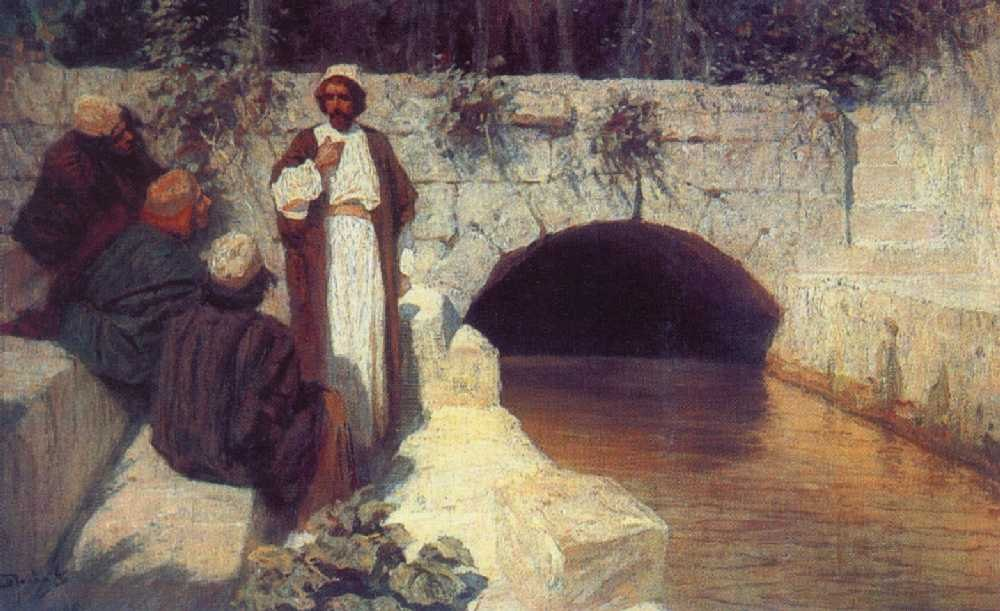
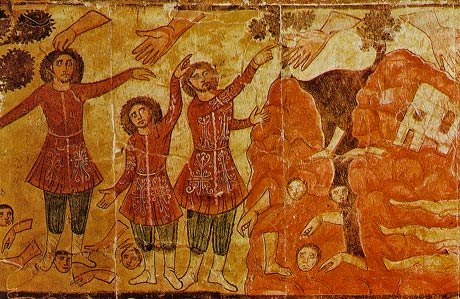
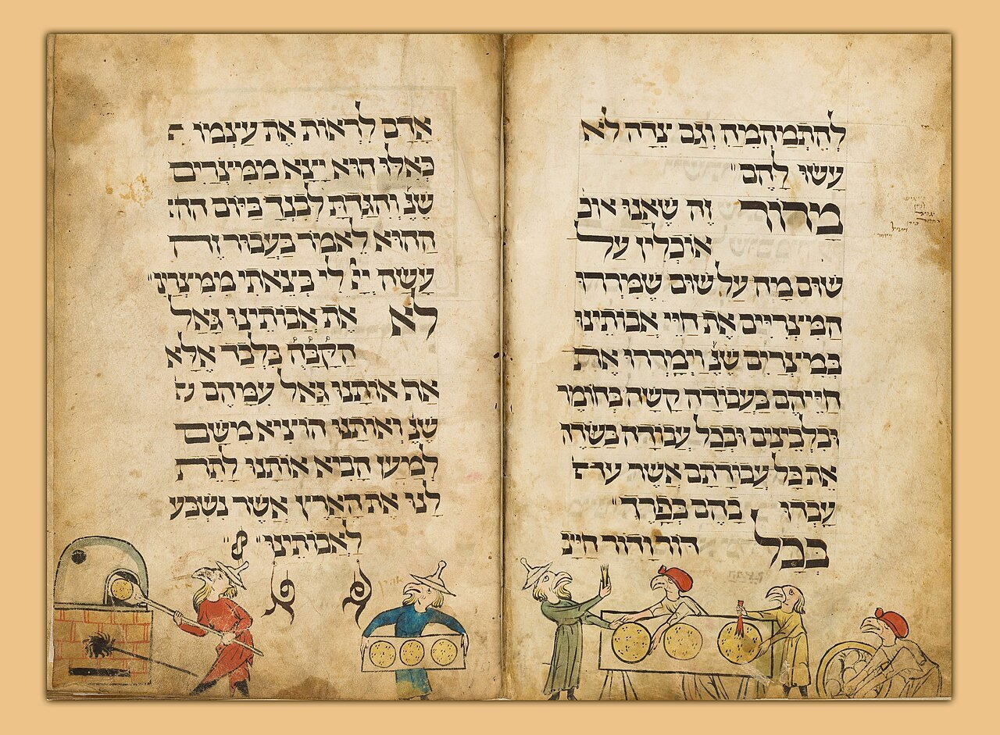
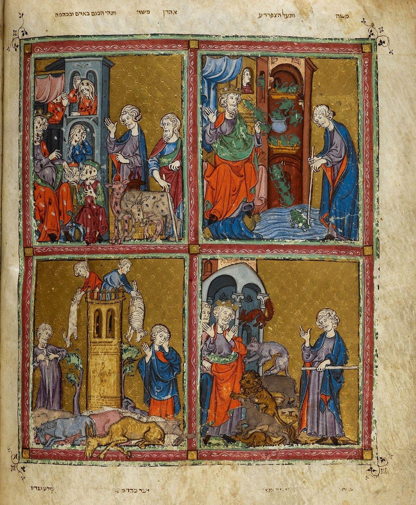
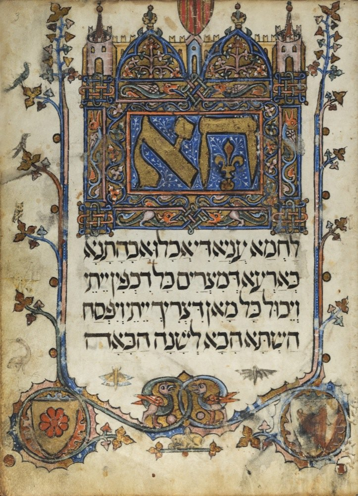
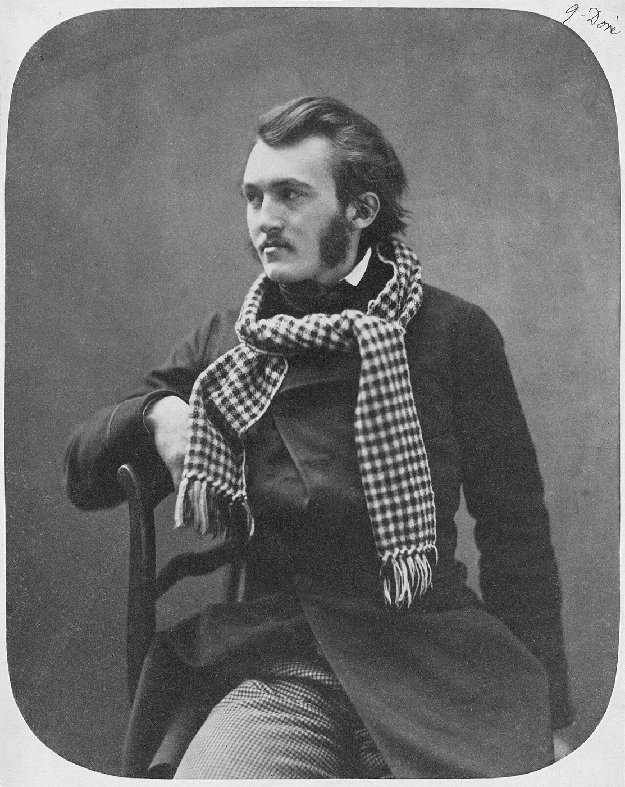

Архаика и подлинность в библейской иллюстрации
Ощущение древности в библейской иллюстрации возникает тремя путями: через археологию и этнографию Ближнего Востока, через внутреннюю сосредоточенность образа и через древний изобразительный язык. Ниже художники и памятники, на которых эти пути видны лучше всего, с указанием конкретных работ и мест, где их можно увидеть.
Археология и этнография
Александр Иванов (1806–1858) в последние годы жизни работал над «Библейскими эскизами». После его смерти осталось около двухсот акварелей; сейчас они в Третьяковской галерее. Иванов задумывал их как эскизы росписей для особого здания, которое сам называл «храмом искусства», и не предназначал для церкви. Он читал свежие для своего времени публикации раскопок в Ниневии и изучал египетские памятники. В акварелях это видно по фризовому построению сцен, по ассирийскому и египетскому костюму и по почти обрядовой неподвижности фигур. Иванов пытался мыслить формами той эпохи, и стилизацией его работу назвать нельзя.


Абель Пан (1883–1963) приехал в Иерусалим в 1913 году и работал в школе Бецалель; в 1921 году он привёз туда из Вены первый в городе литографский станок. В 1923–1924 годах вышла его серия из 24 цветных литографий «Книга Бытия: от сотворения мира до потопа». Позже он задумал проиллюстрировать всю Библию, но работу не закончил. С 1940-х годов Пан создавал библейские пастели. Моделями ему служили йеменские евреи, бедуины и старики иерусалимского Старого города: с них написаны праотцы и пророки, с молодых йеменских и бедуинских девушек — Ривка, Рахель и другие библейские женщины в свадебных уборах. Его персонажи — живые люди Ближнего Востока, музейной реконструкции здесь нет.
Джеймс Тиссо (1836–1902) после успеха евангельского цикла «Жизнь Христа» (1886–1895) в 1896 году снова поехал на Ближний Восток собирать материал для Ветхого Завета. Из этой работы выросло больше 350 гуашей, часть из них после смерти Тиссо закончили его помощники. Серия вышла в печати в 1904 году; сейчас ветхозаветные листы хранятся в Еврейском музее Нью-Йорка, евангельские — в Бруклинском музее. У Тиссо огромный запас натурных зарисовок костюма, утвари и местности. Слабое место в том, что арабский быт XIX века перенесён в библейское время, поэтому его точность этнографическая, а историческая — лишь отчасти.



Эфраим Моше Лилиен (1874–1925) иллюстрировал многотомное немецкое издание «Книги Библии» (1908–1912). В его графике стиля модерн есть ассирийские и древнееврейские мотивы: орнамент, головные уборы, крылатые фигуры. Архаика у Лилиена прежде всего орнаментальная, а сам рассказ остаётся в стороне.


Василий Поленов (1844–1927) дважды ездил на Ближний Восток, в 1881–1882 и в 1899 годах, и привёз сотни этюдов. На их основе написан цикл «Из жизни Христа» из 64 картин, впервые показанный в 1909 году. Пейзаж и свет Галилеи у Поленова подлинные, они написаны с натуры. Фигуры при этом остаются в академической традиции.


Внутренняя подлинность
Рембрандт (1606–1669) жил на улице Йоденбрестрат, рядом с еврейским кварталом Амстердама, и брал соседей в модели. Археологии у него почти нет: тюрбаны и парча взяты из амстердамских лавок. Подлинность у Рембрандта в лицах, руках и паузах между людьми. Лучше всего это видно в «Жертвоприношении Авраама» (1635, Эрмитаж), где ангел перехватывает руку с ножом, и в «Благословении Яакова» (1656, Кассель), где Йосеф бережно поддерживает руку отца.


Марк Шагал (1887–1985) начал офорты к Библии по заказу парижского издателя Амбруаза Воллара и в 1931 году ради этой работы поехал в Землю Израиля. Серия из 105 листов вышла в 1956 году. Праотцы и пророки у Шагала похожи на стариков из Витебска. Его архаика — память местечка и обряда, перенесённая на библейских героев; она родовая, без исторической реконструкции. Его поздние большие картины на библейские темы собраны в Национальном музее Марка Шагала в Ницце.

Древний изобразительный язык
Синагога в Дура-Европосе на Евфрате расписана около 244 года. Около 256 года город засыпали землёй, укрепляясь перед осадой, и это сохранило росписи. Их открыли в 1932 году, перенесли в Национальный музей Дамаска и собрали там в реконструкции молельного зала; полный комплект копий хранится в Йельском университете. Это самый ранний и самый большой известный цикл еврейских изображений на библейские сюжеты. По нему удобно проверять, насколько архаична любая поздняя работа. Самый узнаваемый приём Дуры — рука, протянутая с неба: так обозначено действие Бога без изображения Его облика.


Средневековые еврейские агады дают другой образец. «Агада с птичьими головами» (Германия, около 1300 года, Музей Израиля) изображает людей с птичьими головами; так художник обходил изображение человеческого лица. Золотая агада (Каталония, около 1320 года, Британская библиотека) рассказывает Исход на золотом фоне сценами, близкими к готической книжной миниатюре. Сараевская агада (Барселона, около 1350 года, Национальный музей Боснии и Герцеговины) начинается с сотворения мира и показывает землю круглой. Условность этих рукописей передаёт древность сильнее любой реалистичной реконструкции.



Для сравнения
Гюстав Доре (1832–1883) выпустил иллюстрированную Библию в 1866 году; в ней больше двухсот гравюр. Это самый тиражируемый иллюстратор Библии, и архаики у него почти нет. Его потоп, Вавилонская башня и пророки построены как сцены европейского романтического театра.


Где смотреть
— Иванов, «Библейские эскизы»: Третьяковская галерея, Москва.
— Тиссо, Ветхий Завет: Еврейский музей, Нью-Йорк; «Жизнь Христа»: Бруклинский музей.
— Рембрандт, «Жертвоприношение Авраама»: Эрмитаж, Санкт-Петербург; «Благословение Яакова»: Картинная галерея старых мастеров, Кассель.
— Шагал, библейские картины: Национальный музей Марка Шагала, Ницца.
— Росписи Дура-Европоса: Национальный музей, Дамаск; копии
— Художественная галерея Йельского университета.
— «Агада с птичьими головами»: Музей Израиля, Иерусалим.
— Золотая агада: Британская библиотека, Лондон.
— Сараевская агада: Национальный музей Боснии и Герцеговины, Сараево.